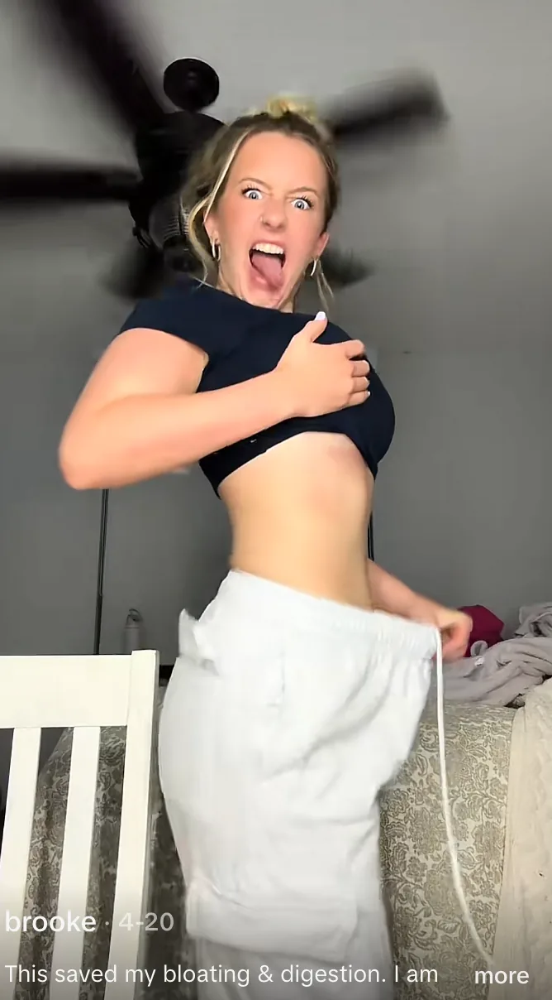

Crea los videos sugeridosPlease create the suggested videos
Festín navideño + demo de unión al aceite · Edición de dos cortes · Lista de puntos de dolor digestivo · Revelado de resultado antes/después · Revelado silencioso de cuerpo · Educación sobre la fibra · Reseña psicología inversa en el coche. Para videos adicionales, elige los formatos opcionales de abajo o propón tu propia idea a nuestro equipo para confirmarla antes de grabar.Holiday Feast + Oil-Binding Demo · Double-slice editing · Pain-Point Checklist · Before-and-After Result Reveal · Silent Body Reveal · Fiber Education · In-Car Reverse-Psychology Review. For additional videos, choose from Optional Formats below or pitch your own idea to our team for confirmation before filming.
Festín navideño + demo de unión al aceiteHoliday Feast + Oil-Binding Demo
Amor por la comida festiva + malestar post-comida → reacción dramática al demo de unión al aceite → explica la diferencia del producto para unir aceite → presenta sus beneficios de fibra → mézclalo en tu bebida habitual → CTA festiva.Love of holiday food + post-meal discomfort → dramatic reaction to the oil-binding demo → explain the product's oil-binding difference → introduce its fiber benefits → mix it into your usual drink → holiday CTA.
Abre con una confesión festiva emocionada y muestra el demo de unión al aceite en los primeros segundos, reaccionando de forma dramática (Elige una para usar):Open with an excited holiday confession, then show the oil-binding demo within the first few seconds and react dramatically (Pick one to use):
⚠️ Reacciona de forma EXAGERADA al principio, igual que en los videos de ejemplo. La Navidad es obligatoria mencionarla: nombra los platos abundantes (salsas, fritos, postres) y conecta esa comida con el demo.⚠️ Add your EXAGGERATED reaction at the start, just like the reference videos. Christmas must be mentioned: name the rich dishes (gravy, fried sides, dessert) and tie that meal back to the demo.
Cómo grabarlo: sostén el teléfono para mostrar el demo de absorción de aceite proporcionado, o usa Green Screen con el metraje de fondo; reacciona con sorpresa exagerada y luego explica cómo Daily Fiber Mix apoya la regularidad y te ayuda a sentirte menos pesado después de las comidas abundantes.How to shoot it: hold up your phone to show the provided oil-absorption demo, or use Green Screen with the demo footage behind you; react with exaggerated surprise, then explain how Daily Fiber Mix supports regularity and helps you feel less heavy after rich meals.
OBLIGATORIO — Menciona que la cena de Navidad lleva mucho aceite: nombra lo que vas a comer (salsas, fritos, postres) y conéctalo con el demo.MUST — Mention that the Christmas feast really is a lot of oil: name what you are eating (gravy, fried sides, dessert) and tie it back to the demo.
- Mezcla un stick en tu bebida habitual en la mesa festiva. "No tiene sabor, se mezcla sin grumos y encaja justo en las comidas que ya disfruto, sin pedirme que deje mis platos festivos favoritos."Show yourself mixing one stick into your usual drink at the holiday table. "It's flavorless, mixes smoothly, and fits right into the meals I already enjoy—without asking me to skip my favorite holiday foods."
- Presenta Daily Fiber Mix. Cada stick tiene 6 g de fibra (unas 20 frambuesas) y fibra prebiótica para apoyar la bacteria intestinal, las evacuaciones regulares, menos hinchazón y un vientre de aspecto más plano.Introduce Daily Fiber Mix. Each stick has 6g of fiber (about 20 raspberries) and prebiotic fiber to support gut bacteria, regular bowel movements, less bloating, and a flatter-looking stomach.
Edición de dos cortesDouble-slice editing
Graba dos personas juntas: un corte mostrando Daily Fiber Mix y otro comparándolo con un producto de fibra de la competencia o con frutas y verduras reales; luego edita los dos cortes juntos. OBLIGATORIO: las dos personas tienen que aparecer en pantalla.Film two people together: one slice showcasing Daily Fiber Mix, and a second slice comparing it against a competitor's fiber product or actual fruits and vegetables — then edit the two slices together. MUST: both people have to be on screen.
Abre con dos personas hablando (madre e hija, hermanas o amigas), cada una con su vaso. Una duda, la otra hace la prueba y las dos reaccionan en el mismo cuadro (Elige una para usar):Open with two people talking (mother and daughter, sisters, or friends), each with their own glass. One doubts it, the other runs the test, and both react in the same frame (Pick one to use):
Más hooks de dos personasMore two-person hooks ›
⭐ Las dos personas tienen que estar en el cuadro al mismo tiempo — no vale juntar dos clips grabados por separado. Que se vea la conversación real: una habla, la otra escucha, las dos miran el vaso.⭐ Both people must be in the frame at the same time — two separately filmed clips cut together don't count. Make it a real conversation: one talks, the other listens, both look at the glasses.
Añade un antes/después personal y claro: graba tu vientre antes (hinchado) y después, y muestra el abdomen de cerca, sin ropa holgada que lo tape. Después mete un stick de Daily Fiber Mix en la cintura del pantalón o en el bolsillo para que el vientre se vea MÁS plano.Add a clear personal before-and-after: film your belly before (bloated) and after, and get your lower stomach close to the camera, no baggy clothing covering it. Then tuck a Daily Fiber Mix stick into your waistband or pants pocket so your stomach looks FLATTER.
⭐ Prioriza la PRIMERA imagen como tu referencia principal: mete el producto en el bolsillo del pantalón para que tu vientre se vea MÁS PLANO. ¡Esto es MUY importante!⭐ Use the FIRST image as your main reference: tuck the product into your pants pocket so your stomach looks FLATTER. This is VERY important!

- Corte 1 — producto: muestra el stick, viértelo en una bebida que ya disfrutas y menciona 6 g de fibra (unas 20 frambuesas), sin sabor y sin azúcar.Slice 1 — product: show the stick, pour it into a drink you already enjoy, and mention 6g of fiber (about 20 raspberries), flavorless, no sugar.
- Corte 2 — comparación: mismo agua, una fibra de la competencia o fruta real; deja reposar 30 s y muestra cuál se aclara y cuál deja grumos.Slice 2 — comparison: same water, a competitor's fiber or real fruit; let both stand 30s and show which turns clear and which leaves lumps.
- Las dos reaccionan: una admite que se equivocaba, con las dos caras y los dos vasos en pantalla.Both react: one admits they were wrong — both faces and both glasses on screen.
- Edición: alterna los dos cortes y etiqueta cuál es cuál ("mío / de ella"), en 15-30 s.Edit: cut between the two slices and label which is which ("mine / hers"), in 15-30s.
Lista de puntos de dolor digestivoPain-Point Checklist
Lista rápida de molestias digestivas reconocibles → explica por qué estas señales merecen atención → presenta la fibra como una base olvidada → explica los beneficios clave de la fibra → presenta y usa Daily Fiber Mix → CTA.Rapid list of recognizable digestive concerns → explain why these signs deserve attention → introduce fiber as an overlooked foundation → explain key fiber benefits → introduce and use Daily Fiber Mix → CTA.
Habla directo a cámara en un ritmo rápido y creciente, mostrando un punto de dolor por corte con texto en pantalla:Speak directly to the camera in a fast, escalating rhythm, showing one pain point per cut with matching on-screen text:
- Muestra cómo usas Daily Fiber Mix. "Daily Fiber Mix me da 6 g de fibra en un stick sin sabor. Se mezcla suavemente en la bebida que ya tomo, así que es un hábito fácil de mantener."Show yourself mixing Daily Fiber Mix into your usual drink. "Daily Fiber Mix gives me 6g of fiber in one flavorless stick. It mixes smoothly into the drink I already have, so it's an easy habit to stay consistent with."
- Regularidad y menos inflamación, sin promesas médicas. Habla de lo que notaste tú (regularidad, menos hinchazón) y deja el descargo "results may vary / no es consejo médico" en pantalla.Regularity and less bloating, without medical promises. Talk about what you noticed yourself (regularity, less bloating) and keep the "results may vary / not medical advice" disclaimer on screen.
Revelado de resultado antes/despuésBefore-and-After Result Reveal
Abre con una imagen clara y personal de antes/después, luego comparte tu experiencia con Daily Fiber Mix y cómo encaja en tu rutina.Open with a clear, personal before-and-after visual, then share your experience with Daily Fiber Mix and how it fits into your routine.
Abre con una imagen clara y personal de antes/después, luego usa una referencia breve al entrenador de celebridades para introducir el ángulo de la fibra (Elige una muestra para recrearla).Open with a clear, personal before-and-after visual, then use a short celebrity-trainer reference to introduce the fiber angle (Pick one sample to recreate it ).
Más opciones de texto en pantallaMore on-screen text options ›
⭐ Prioriza la PRIMERA imagen como tu referencia principal: mete el producto en el bolsillo del pantalón para que tu vientre se vea MÁS PLANO. ¡Esto es MUY importante!⭐ Use the FIRST image as your main reference: tuck the product into your pants pocket so your stomach looks FLATTER. This is VERY important!
- Comparte una experiencia personal o un punto de dolor. Menciona la hinchazón, una sensación pesada, la irregularidad u otra experiencia que encaje con el ángulo elegido. Las imágenes del punto de dolor son opcionales.Share a personal experience or pain point. Mention bloating, a heavy feeling, irregularity, or another experience that fits your chosen angle. Pain-point images are optional.
- Presenta Daily Fiber Mix. Cada stick tiene 6 g de fibra (unas 20 frambuesas) y fibra prebiótica para apoyar la bacteria intestinal, las evacuaciones regulares, menos hinchazón y un vientre de aspecto más plano.Introduce Daily Fiber Mix. Each stick has 6g of fiber (about 20 raspberries) and prebiotic fiber to support gut bacteria, regular bowel movements, less bloating, and a flatter-looking stomach.
- Muestra un visual relevante del producto. Mezclalo en una bebida o comida que ya disfrutes. El material del demo de absorción de aceite está disponible y se puede incluir si encaja de forma natural.Show a relevant product visual. Stir it into a drink or food you already enjoy. The oil-absorption demo footage is provided and can be included if it fits naturally.
Así se ve el físico que el hook da por hecho: Ariana Grande, Lady Gaga y Robert Pattinson, el nuevo 007. El primer vídeo es la lista de estrellas de Harley Pasternak. Úsalas como referencia de tono, encuadre y luz — no las publiques tal cual y no pongas texto en inglés encima.This is the physique the hook implies: Ariana Grande, Lady Gaga and Robert Pattinson, the new 007. The first clip is Harley Pasternak's A-list client roster. Use them as a reference for tone, framing and light — don't repost them as-is and don't put English text over them.
Nota interna: antes de grabar, confirma con la marca la relación entrenador–Pattinson; si no está confirmada, mantén el tono "dicen que".Internal note: before filming, confirm the trainer–Pattinson link with the brand; if it isn't confirmed, keep the "they say" framing.
Revelado silencioso de cuerpo antes/despuésSilent Before-and-After Body Reveal
Material pasado del vientre hinchado en luz más oscura → vientre más plano actual y físico seguro en luz brillante → revelado del producto Daily Fiber Mix → CTA en pantalla.Past bloated-stomach footage in darker lighting → current flatter-looking stomach and confident physique in bright lighting → Daily Fiber Mix product reveal → on-screen CTA.
Abre de inmediato con tu material "antes" más fuerte a pantalla completa: sin introducción, voz en off ni plano del producto. El contraste visual debe detener el scroll. Muestra el material antiguo de tu vientre hinchado, llenando la pantalla, en una luz más oscura y moody.Start immediately with your strongest full-screen "before" footage—no introduction, voiceover, or product shot—so the visual contrast stops the scroll. Show older footage of your stomach looking or feeling bloated. Let the footage fill the screen, keep it in darker, moodier lighting.
- Corta a tu estado actual. Vientre de aspecto más plano y físico seguro. Usa un atuendo que muestre claramente tu abdomen y graba con una luz brillante y favorecedora.Cut to your current physique. A flatter-looking stomach and confident physique. Wear an outfit that clearly shows your midsection and film in bright, flattering light.
- Revela el producto. Presenta Daily Fiber Mix y cómo encaja en tu rutina diaria; cada stick tiene 6 g de fibra (unas 20 frambuesas) y fibra prebiótica.Reveal the product. Introduce Daily Fiber Mix and how it fits your daily routine; each stick has 6g of fiber (about 20 raspberries) and prebiotic fiber.
Educación sobre la fibraFiber Education
Elige uno de los dos enfoques educativos: punto de dolor sencillo + solución, o desglose educativo específico. Luego presenta Daily Fiber Mix, muestra cómo lo usas y cierra con CTA.Choose one educational approach: simple pain point + solution, or a specific educational breakdown. Then introduce Daily Fiber Mix, show how you use it, and close with a CTA.
Usa frases rápidas de síntoma y respuesta. Muestra un punto de dolor por corte y conéctalo de inmediato con la fibra, sin introducción ni explicación larga:Use quick symptom-and-answer statements. Show one pain point per cut and immediately connect it to fiber—no introduction or lengthy explanation:
Abre con una afirmación que desmienta un mito, como "No toda la hinchazón es igual", luego muestra los distintos tipos como etiquetas claras en pantalla antes de explicar cada uno:Open with a myth-busting statement such as "Not all bloating is the same," then display the different types as clear on-screen labels before explaining each one:
- Opción A: explica brevemente que la fibra apoya las evacuaciones regulares, la salud digestiva y la saciedad duradera. Presenta Daily Fiber Mix como una forma fácil de añadir 6 g de fibra a una bebida o comida que ya tengas en tu rutina.Option A: briefly explain that fiber supports regular bowel movements, digestive health, and lasting fullness. Introduce Daily Fiber Mix as an easy way to add 6g of fiber to a drink or food already in your routine.
- Opción B: usa tres secciones cortas y etiquetadas: "Plano por la mañana, hinchada por la noche" — puede relacionarse con fermentación o motilidad más lenta; vigila alimentos que suelen generar gases, como el ajo. "Hinchada después de solo unos bocados" — puede relacionarse con digestión más que con gases; come despacio y evita tomar mucho líquido con la comida. "Hinchada al despertar" — puede estar conectada con evacuaciones irregulares; una ingesta constante de fibra puede apoyar la regularidad. Cierra mostrando Daily Fiber Mix añadido a tu bebida habitual.Option B: use three short, clearly labeled sections: "Flat in the morning, bloated by night" — may be related to fermentation or slower motility; pay attention to foods that commonly trigger gas, such as garlic. "Bloated after only a few bites" — may relate to digestion rather than gas; slow down while eating and avoid drinking large amounts of fluid with the meal. "Bloated when you wake up" — may be connected to irregular bowel movements; consistent fiber intake can help support regularity. End by showing Daily Fiber Mix being added to your usual drink.
Reseña de psicología inversa en el cocheIn-Car Reverse-Psychology Review
Hook de "car yapper" con psicología inversa → experiencia personal → presenta Daily Fiber Mix y sus beneficios → explica sabor, textura y conveniencia → muestra el producto en tu rutina → CTA.Car yapper reverse-psychology hook → personal experience → introduce Daily Fiber Mix and its benefits → explain the taste, texture, and convenience → show the product in your routine → CTA.
Graba en tu coche aparcado, con el producto o la bebida visible a la altura del cinturón, y lanza una advertencia juguetona o un "efecto secundario inesperado" (Elige una para usar):Film in your parked car with the product or drink visible at your waistband, then deliver a playful mock warning or "unexpected side effect" (Pick one to use):
- Reseña personal relajada. Sostén Daily Fiber Mix y transición a una reseña casual: "Cada stick tiene 6 g de fibra de varias fuentes, además de prebióticos que apoyan las bacterias beneficiosas del intestino. Ayuda a apoyar las evacuaciones regulares y una sensación menos estreñida e hinchada."Casual personal review. Hold up Daily Fiber Mix and transition into a casual review: "Each stick has 6g of fiber from multiple fiber sources, plus prebiotics that support beneficial gut bacteria. It helps support regular bowel movements and a less backed-up, less-bloated feeling."
- Muestras cómo lo usas. "No tiene azúcar, no se nota el sabor y se mezcla suavemente en el café o el agua que ya tomo. Tarda unos 30 segundos, así que es algo que de verdad puedo mantener."Show how you use it. "It has zero sugar, no noticeable taste, and mixes smoothly into the coffee or water I already drink. It takes about 30 seconds, so it's something I can actually stay consistent with."
Harley Pasternak sobre el desayuno, la fibra y su rutina diariaHarley Pasternak on breakfast, fiber and his daily routine
Toca la portada para ver la entrevista dentro de esta página. Los dos momentos citados abajo llevan el reproductor directo a ese minuto.Tap the cover to play the interview inside this page. The two cited moments below jump the player straight to that timestamp.
Ambos momentos provienen de la misma entrevista con Harley Pasternak. Los enlaces abren el video original en YouTube en ese minuto.Both moments come from the same interview with Harley Pasternak. The links open the original YouTube video at the cited minute.
Formatos opcionalesOptional Formats
Responde a los comentariosAnswer/reply the comments
Crea videos que destaquen los puntos clave de venta citando comentarios de videos anteriores, o videos que respondan preguntas planteadas en la sección de comentarios de publicaciones anteriores.Create videos that highlight key selling points by referencing comments from previous videos, or produce videos that provide answers to questions raised in the comments section of earlier posts.
Car YapperCar Yapper
En el video compartes un gran producto para reducir la hinchazón, mencionando que siempre llevas algunos en el coche y que añades un sobre a tu café cada día.In the video, you share a great product for reducing bloating—mentioning that you always keep some in your car and add a packet to your coffee every day.
- Video de reacción — Dueto / Stitch — Reacciona a una tendencia de fibra, una recomendación de entrenador de celebridades o una conversación sobre salud intestinal, luego comparte tu perspectiva y presenta Daily Fiber Mix.Reaction Video — Duet / Stitch — React to a fiber trend, celebrity-trainer recommendation, or gut-health conversation, then share your perspective and introduce Daily Fiber Mix.
- Rutina diaria de café / GRWM — Muestra cómo mezclas Daily Fiber Mix en una bebida que ya forma parte de tu rutina diaria.Everyday Coffee Routine / GRWM — Show how you mix Daily Fiber Mix into a drink that's already part of your daily routine.
- Ángulo de cultura pop y regalo de temporada — Vincula el video a un momento relevante de la cultura pop o una ocasión estacional. Para Acción de Gracias o Navidad, también puedes presentar Daily Fiber Mix como un regalo de bienestar considerado para alguien que quiera una forma fácil de añadir fibra a su rutina.Pop-Culture & Seasonal Gift Angle — Tie the video to a relevant pop-culture moment or seasonal occasion. For Thanksgiving or Christmas, you can also present Daily Fiber Mix as a thoughtful wellness gift for someone who wants an easy way to add fiber to their routine.
- Comparación de ingredientes — Compara los ingredientes o el formato de Daily Fiber Mix con otros tipos de productos de fibra, manteniendo la comparación precisa y basada en información verificable.Ingredient Comparison — Compare Daily Fiber Mix's ingredients or format with other types of fiber products, keeping the comparison accurate and based on verifiable information.
- Desglose del punto de dolor — Habla de una preocupación cercana, como la hinchazón o la irregularidad, y explica cómo añadir fibra puede encajar en tu rutina.Pain-Point Breakdown — Talk through a relatable concern, such as bloating or irregularity, and explain how adding fiber can fit into your routine.
- Sketch de doble personaje — Interpreta dos versiones de ti mismo para mostrar una conversación cercana sobre la fibra, la hinchazón o cómo encontrar una rutina sencilla.Dual-Character Skit — Play two versions of yourself to show a relatable conversation about fiber, bloating, or finding an easy routine.
No todo video necesita seguir la misma secuencia exacta. Mantén claros el producto, la oferta y el CTA.Not every video needs to follow the exact same sequence. Keep the product, offer, and CTA clear.